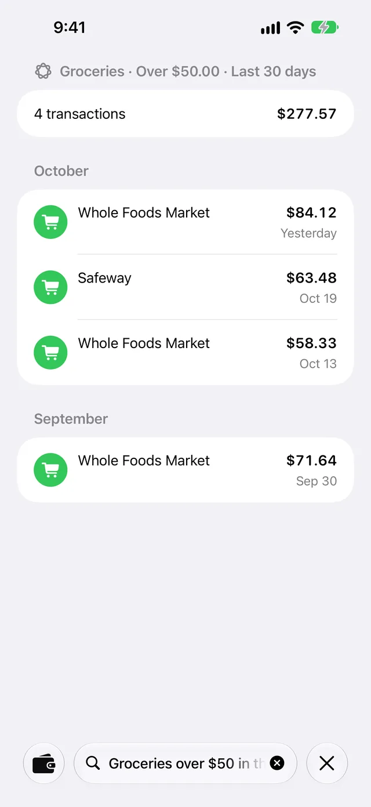

Search
Search in WalletFeed finds your Apple Card, Apple Cash and Savings transactions. You type a part of a merchant name, a description, a category or an amount. Search then shows each transaction that has your text. With Apple Intelligence, Search can also make filters from your text, for example from Dining over $50 last month. You can use Search without WalletFeed Pro.
Search uses the transactions of the Wallet accounts that WalletFeed can read. When you open Search, WalletFeed reads these transactions on your iPhone. WalletFeed does not store these transactions.
Find a transaction
-
On your iPhone, open WalletFeed.
-
Tap the search button at the bottom of the screen.

Search shows the search field and the keyboard.
-
Type a part of a merchant name, a category or an amount, for example
Uber,Diningor23.40.Search shows the results while you type.
Search finds the same transactions for uber, Uber and UBER.
The results are in one section for each month. Transactions has the same sections.
To type different text, tap the clear button in the search field. To close Search, tap the close button (X). Then WalletFeed shows the tab that you used before you opened Search.
Find transactions in a category
When the search field is empty, Search shows Categories. This list has the categories of your transactions.
-
On your iPhone, open WalletFeed.
-
Tap the search button at the bottom of the screen.
-
If the search field has text, tap the clear button in the search field.
-
In Categories, tap a category, for example Groceries.
Search puts the name of the category in the search field and shows the results.
Find transactions with Apple Intelligence
Search with Apple Intelligence reads your text and makes filters from it. For example, Dining over $50 last month gives the filters Dining · Over $50.00 · Last month. Search with Apple Intelligence is available only if your iPhone can use Apple Intelligence and Apple Intelligence is active. On these iPhones, the empty search field shows Dining over $50 last month as an example.
-
On your iPhone, open WalletFeed.
-
Tap the search button at the bottom of the screen.
-
Type a category, a merchant name, an amount or a period, for example
Dining over $50 last month.While you type, Search shows the transactions that have your text. If no transaction has your text, Search shows Tap Search to use Apple Intelligence.
-
Tap Search on the keyboard.
While Apple Intelligence reads your text, Search shows the Apple Intelligence icon and a progress indicator above the results.

At the top of the results, Search shows the filters that Apple Intelligence found in your text, for example Groceries · Over $50.00 · Last 30 days. Below the filters, a row shows the number of transactions and their total amount. If Search finds no transactions for the filters, the row shows 0 transactions and $0.00.
Apple Intelligence can find these filters in your text:
- One or more categories, for example Dining or Groceries
- A merchant, for example
Uber - Only purchases (Purchases), or only money that you received (Money in)
- An amount with
overorunder, for exampleover $50 - One period (Last 7 days, Last 30 days, This month or Last month).
A word that is not a category name can also give a category. For example, restaurants gives Dining, and gas gives Fuel.
WalletFeed uses a merchant or an amount only if it is in your text. If Apple Intelligence gives a different merchant or amount, or cannot read your text, Search shows Couldn't read this search. Showing text matches. Then the list shows the transactions that have your text.
To find a merchant, WalletFeed uses only the letters and numbers in your text. Uppercase letters and accents do not change the result. WalletFeed also finds the merchant if your text adds "s" or "es" to the end of the name. For example, Ubers finds Uber, and trader joes finds Trader Joe's.
WalletFeed calculates the number of transactions and the total amount. Apple Intelligence does not calculate them.
For Money in, the total amount is the money that you received. For the other filters, WalletFeed adds the amounts of your purchases. Refunds decrease the total amount. Payments and transfers do not change it.
When you change the text, WalletFeed removes the filters.
To use Apple Intelligence again, tap Search on the keyboard.
Open Search with Siri
-
On your iPhone, start Siri.
-
Tell Siri "Search WalletFeed" or "Find a transaction in WalletFeed".
You hear "What are you looking for?"
-
Tell Siri the transactions to find, for example "dining over $50 last month".
Search opens with your text in the search field. If Search with Apple Intelligence is available, Apple Intelligence then reads the text.
Siri does not receive your transactions or the total amount. Only WalletFeed shows them.
In the Shortcuts app, the name of this action is Search Transactions. For more information, refer to Siri and Shortcuts.
If there is a problem
If Search shows No Cards
You did not tap Share or Don't Share on the Share Wallet Data screen.
-
Tap Choose Accounts.
The Share Wallet Data screen opens.
-
Select the accounts that WalletFeed can read.

-
Tap Share.
If Search shows Wallet Access Off
You tapped Don't Share, or you stopped Wallet access for WalletFeed in the Settings app. After you tap Share or Don't Share, iOS does not show the Share Wallet Data screen again.
- On your iPhone, open the Settings app.
- Tap Privacy & Security › Wallet › WalletFeed.
- Select the accounts that WalletFeed can read.
- Open WalletFeed again.
If Search shows No Results for “…”
No transaction has your text in its merchant name, description, category or amount.
- Make sure that your text is correct.
- Type shorter text, for example only the first part of the merchant name.
- If Search shows Tap Search to use Apple Intelligence., tap Search on the keyboard.
If Apple Intelligence does not read your text
Apple Intelligence reads only text that has 2 to 200 characters. If the empty search field shows Transactions, Search with Apple Intelligence is not available on your iPhone.
- Make sure that your text has 2 to 200 characters.
- Tap Search on the keyboard.
If the empty search field shows Transactions, do these steps:
- Make sure that your iPhone model is on the list in Get started with the next generation of Apple Intelligence.
- On your iPhone, open the Settings app.
- Tap Apple Intelligence & Siri.
- Set Apple Intelligence to on, or tap Turn on Apple Intelligence.
- Open WalletFeed again.
If Search shows Couldn't read this search. Showing text matches.
In your text, Apple Intelligence did not find filters that WalletFeed can use. Search then shows the transactions that have your text.
- Type shorter text that has a category, a merchant name, an amount or a period, for example
groceries this month. - Tap Search on the keyboard.
If a transaction is not in the results
Search finds only the transactions of the Wallet accounts that WalletFeed can read. Wallet gives WalletFeed the transactions of each account from the start date that you selected.
- On your iPhone, open the Settings app.
- Tap Privacy & Security › Wallet › WalletFeed.
- Change the accounts that WalletFeed can read, or their start dates.
- Open WalletFeed again.
- Type your text in the search field again.
Related
Updated October 30, 2026